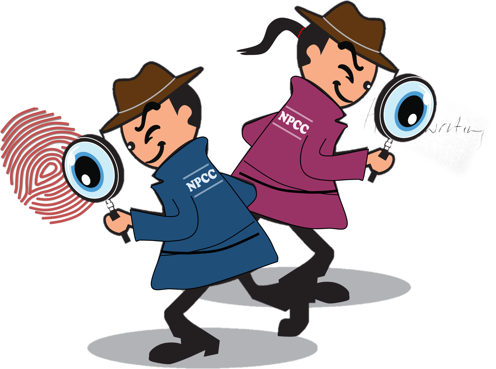

Types of Psychologist Specialties
Aviation Psychologist
Aviation psychologists specialize in applying psychological
principles to enhance safety and performance in aviation. They
focuson human factors, studying how perception, attention,
anddecision-making impact aviation operations. Crew Resource
Management(CRM) is a key area, addressing teamwork and communication
among flight crews. Training and simulation play a vital role, using
advanced technologies to improve pilot training and assess
performance. Stress and fatigue management are crucial, with a focus
on mitigating psychological factors that could affect aviation
professionals. Selection and assessment tools are developed to
identify individuals suited for aviation roles based on cognitive
abilities and personality traits. In accident investigation,
aviation psychologists analyze human factors to understand and
prevent future incidents.
Military Psychologist
Military psychologists specialize in applying psychological
principles within military settings to support personnel. They
address mental health concerns, such as post-traumatic stress
disorder (PTSD), combat stress, and resilience. Assessment and
selection are crucial, as military psychologists evaluate
individuals for roles based on psychological fitness.They contribute
to training programs, enhancing resilience, coping strategies, and
performance optimization.Combat and operational psychology involve
supporting military personnel in high-stress environments and during
deployments.Military psychologists play a role in leadership
development, addressing team dynamics and organizational psychology.
School Psychologist
School psychologists support students' mental health, behavior, and
learning needs. They assess and address emotional challenges,
provide counseling, and collaborate with educators and parents. They
play a crucial role in developing interventions, conducting
assessments, and promoting a positive school environment. School
psychologists also contribute to individualized education plans
(IEPs) for students with special needs. They may offer crisis
intervention and prevention strategies, fostering a safe and
inclusive learning environment. Additionally, they advocate for
students' well-being, promoting social-emotional development and
academic success.
Consumer Psychologist
Consumer psychologists study and analyze consumer behavior to
understand purchasing decisions. They examine factors influencing
buying choices, such as emotions, perceptions, and cultural
influences. Utilizing psychological principles, they help businesses
develop effective marketing strategies and enhance customer
satisfaction. Consumer psychologists conduct research, surveys, and
experiments to uncover consumer preferences and trends. They may
also advise on product design, pricing strategies, and advertising
campaigns to maximize appeal and engagement. Additionally, they
focus on consumer motivation and decision-making processes.

Forensic Psychologist
Forensic psychologists apply psychological principles to legal and
criminal justice settings. They assess and analyze individuals
involved in legal cases, such as defendants, witnesses, and victims.
Using their expertise, they provide insights into mental health
issues, competency evaluations, and risk assessments. Forensic
psychologists may testify in court as expert witnesses and
collaborate with legal professionals to enhance understanding of
psychological factors in legal proceedings. They also contribute to
criminal profiling, analyzing behavioral patterns to aid law
enforcement.